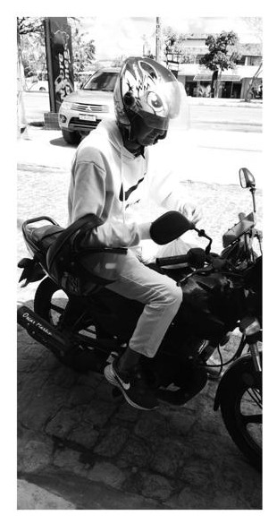

1. O que te influenciou a entrar no ramo de moto Uber?
O que mais me influenciou foi a renda financeira, porque tenho que colocar comida na mesa e, como eu já sabia andar de moto, aproveitei e comecei a rodar de moto Uber.
Trabalhador que atua como Moto Uber

O que mais me influenciou foi a renda financeira, porque tenho que colocar comida na mesa e, como eu já sabia andar de moto, aproveitei e comecei a rodar de moto Uber.
O risco de acidentes: quase todo dia tenho risco de cair de moto. Também tem o clima: há dias muito quentes ou com muita chuva, e assim não consigo trabalhar sem medo de cair e sofrer um acidente. Também tem a parte mecânica da moto e a gasolina.
Depende muito, porque recebo por entrega. Tem mês em que consigo um dinheiro bom e tem meses em que recebo uma quantia não desejável.
Sim, antes de entrar no ramo de entregador, tive um sonho de ser advogado, mas infelizmente não tive condições e tempo e tive que fazer entregas para sustentar a minha família.
Não entendo muito sobre isso.
As respostas ajudam a observar diferentes realidades de trabalho, como estabilidade da renda, despesas, rotina e dificuldades. A experiência de cada trabalhador é individual.